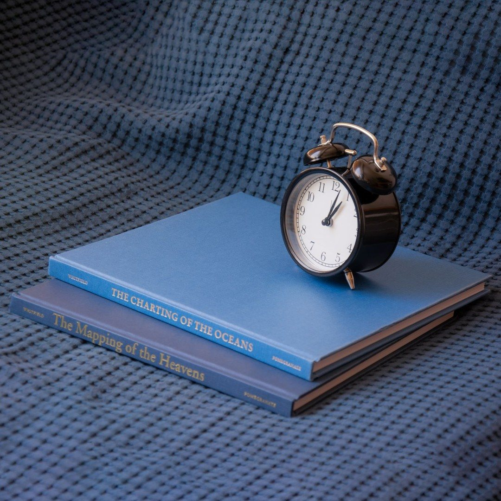
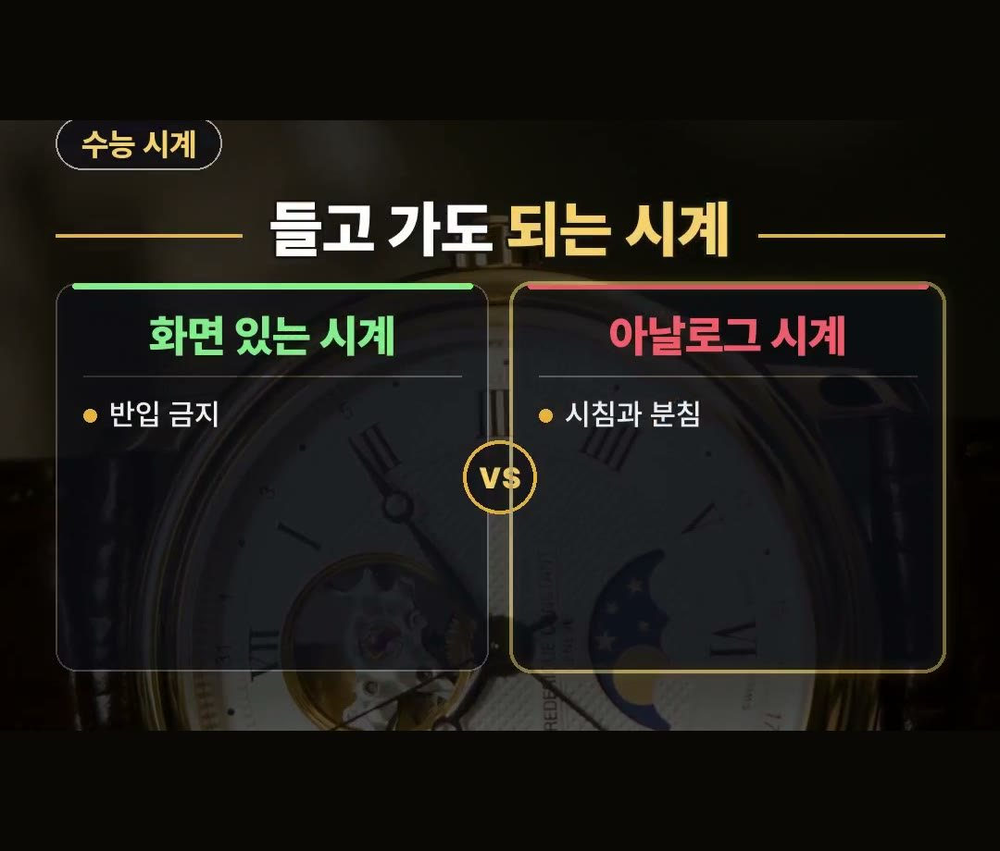
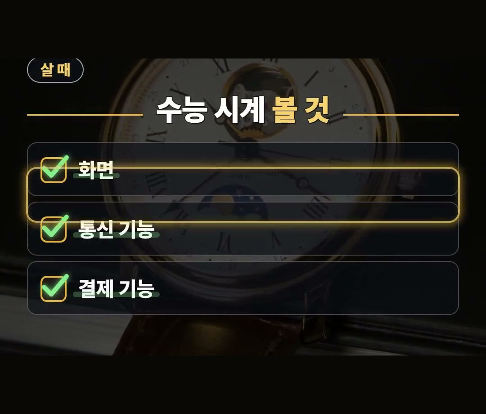
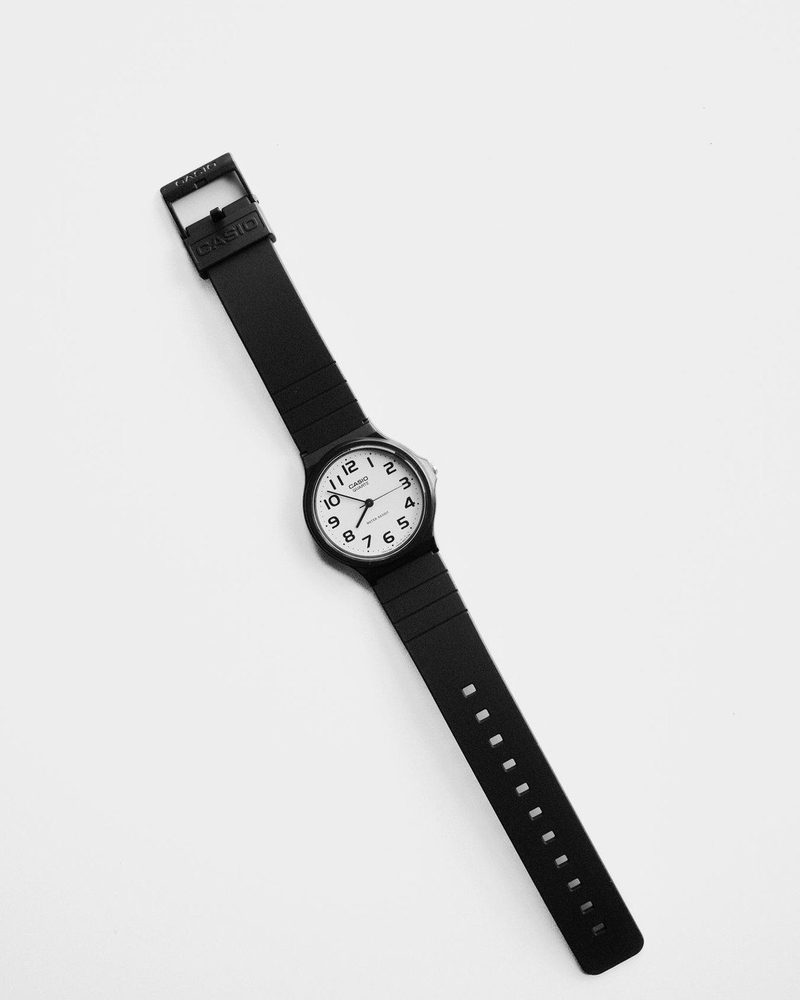
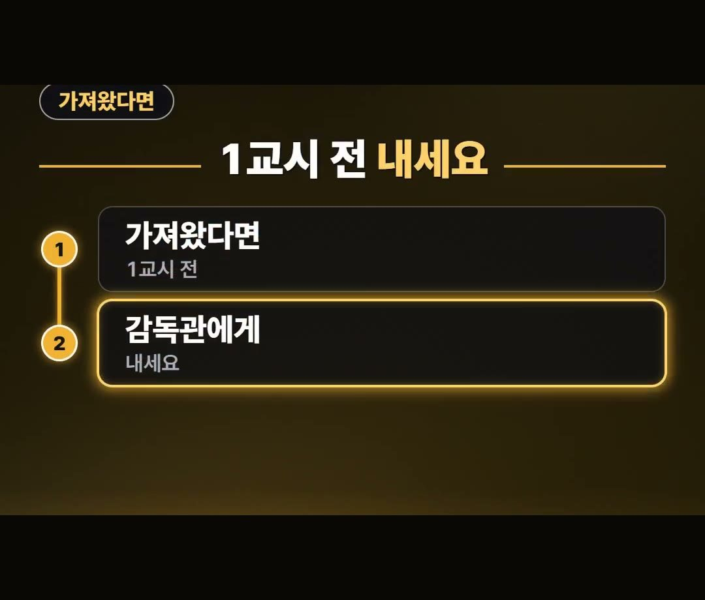
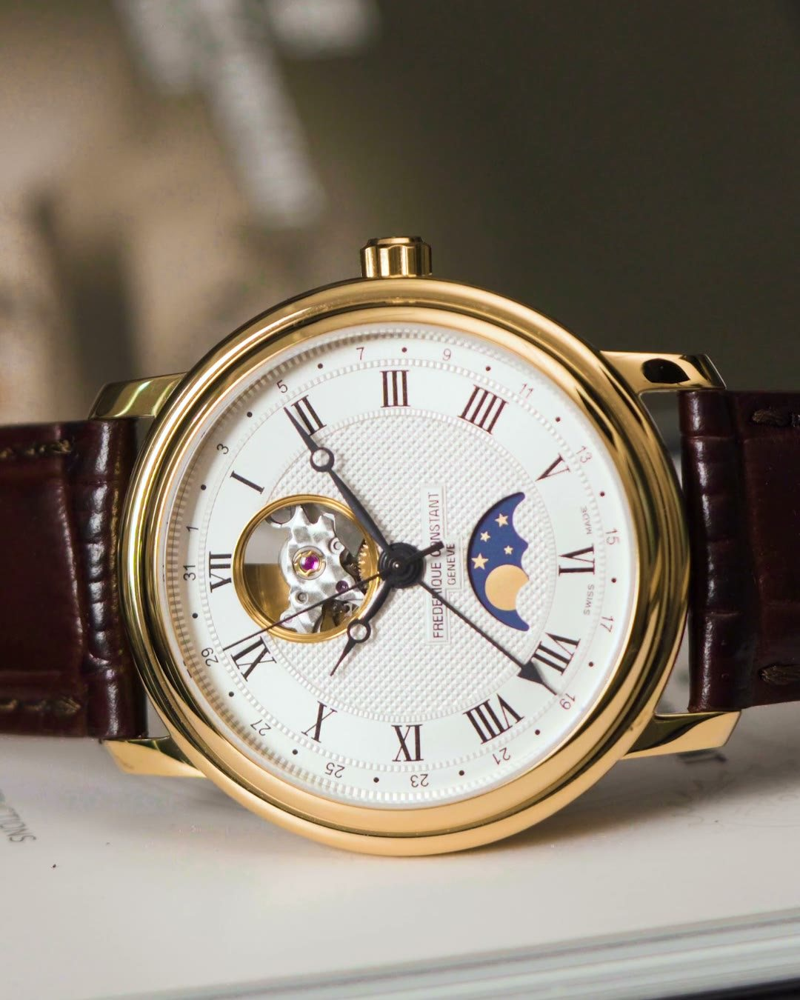

수능 시계 규정, 화면 달린 시계면 반입 금지 | 아날로그 시계 조건 세 가지
※ 이 글에는 제휴 링크가 포함되어 있으며, 링크를 통해 구매하시면 일정 수수료를 받을 수 있습니다. (가격은 같습니다)
※ 이 포스팅은 쿠팡 파트너스 활동의 일환으로, 이에 따른 일정액의 수수료를 제공받습니다.
수능 시계 규정은 딱 세 가지만 기억하면 됩니다.
화면이 없을 것, 통신 기능이 없을 것, 결제 기능이 없을 것이에요.
이 글에서는 한국교육과정평가원 수험생 유의사항에 적힌 내용 그대로, 시험장에 들고 갈 수 있는 시계와 실수로 잘못 가져왔을 때 할 일을 정리했습니다.
수능 시험실에는 시계가 없어요.
그래서 시침과 분침이 있는 아날로그 시계를 직접 챙겨야 하고, 화면 달린 시계는 반입 금지라는 것만은 꼭 기억하세요! ⏰

수능 시계 규정, 왜 시계를 직접 챙겨야 할까요
한국교육과정평가원 수험생 유의사항을 보면 시험실에는 시계가 없다고 안내하고 있어요.
그래서 휴대 가능한 시계를 미리 준비해 두라고 적혀 있습니다.
같은 안내에 점심과 마실 물도 제공되지 않는다고 나와 있어요.
시계와 함께 도시락과 물도 전날 미리 챙겨 두는 편이 마음이 편합니다.
시험 당일 아침에는 챙길 것이 많아서 작은 물건 하나를 빠뜨리기 쉬워요.
시계는 가방에 미리 넣어 두고, 화면이 없는 시계인지 전날 한 번 더 살펴보세요.
- 시험실에는 시계가 없음
- 점심과 물은 제공되지 않음
- 휴대 가능한 시계는 미리 준비
화면 있는 시계는 반입 금지예요
수능 시계 규정에서 가장 많이 헷갈리는 부분이 여기예요.
수험생 유의사항에는 전자식 화면표시기가 있는 물품은 시험장에 가지고 올 수 없는 물품으로 적혀 있고, 그 예로 시계가 함께 들어 있습니다.
숫자가 화면에 뜨는 시계라면 바늘이 함께 있더라도 화면이 있는 시계에 해당한다는 점을 기억해 두세요.
시험장 반입 금지 물품은 시험 시간이든 쉬는 시간이든 적발되면 부정행위로 처리된다고 안내되어 있어요.

들고 갈 수 있는 건 시침과 분침이 있는 아날로그 시계
시험 중에 가지고 있을 수 있는 시계는 시침과 분침이 있는 아날로그 시계예요.
다만 조건이 하나 더 붙습니다.
결제 기능, 블루투스 같은 통신 기능, 전자식 화면표시기가 모두 없어야 해요.
그래서 시계를 새로 고를 때는 아래 세 가지를 차례로 보면 됩니다.
- 화면: 숫자가 뜨는 전자식 화면이 없는지
- 통신 기능: 블루투스 같은 연결 기능이 없는지
- 결제 기능: 결제가 되는 기능이 없는지
셋 중 하나라도 있으면 수능 시계로는 맞지 않아요.


실수로 가져왔다면 1교시 시작 전에 내세요
반입 금지 물품을 어쩔 수 없이 시험장에 가지고 왔다면, 1교시 시작 전에 감독관의 지시에 따라 제출해야 한다고 안내되어 있어요.
내지 않으면 부정행위로 간주된다고 적혀 있습니다.
- 가져왔다면 1교시 시작 전에
- 감독관의 지시에 따라 제출
- 제출하지 않으면 부정행위로 간주
낸 물건은 응시하는 모든 영역의 시험이 끝난 뒤 돌려받을 수 있다고 안내되어 있으니, 괜히 숨기지 말고 먼저 내는 것이 안전해요.

이런 집이면 새로 사지 마세요
집에 이미 시침과 분침이 있는 아날로그 시계가 있고, 그 시계에 화면·통신 기능·결제 기능이 모두 없다면 새로 살 필요는 없어요.
그 시계를 전날 미리 챙겨 두면 됩니다.
반대로 집에 있는 시계가 화면 달린 시계뿐이라면, 수능 날 쓸 아날로그 시계를 하나 따로 챙겨 두는 것이 좋아요.
수험생 자녀를 둔 집이라면 시험 전에 같이 한 번 살펴봐 주세요.

정리
- 수능 시험실에는 시계가 없어서 휴대 가능한 시계를 직접 챙겨야 합니다.
- 전자식 화면이 있는 시계는 반입 금지이고, 화면·통신 기능·결제 기능이 모두 없는 시침·분침 아날로그 시계만 들고 갈 수 있어요.
- 실수로 가져왔다면 1교시 시작 전에 감독관에게 내야 하고, 내지 않으면 부정행위로 간주됩니다.
링크는 아래에 모아 두었어요.
📌 2026년 11월 기준 정보예요. 가격은 시기에 따라 달라질 수 있어요.
· 한국교육과정평가원 대학수학능력시험 누리집 · 수험생 유의사항(수험생 시험요령 · 2027학년도 · 2026년 11월 8일 확인)
사진·영상영상 화면: Pexels (Elements Interactive, Mat Brown, Quang Viet Nguyen, Sergei Starostin, Tima Miroshnichenko, Ömer BÜLBÜL)
사진: Pexels (Alexandra Krainyukhova, Tara Winstead, Brunxs)